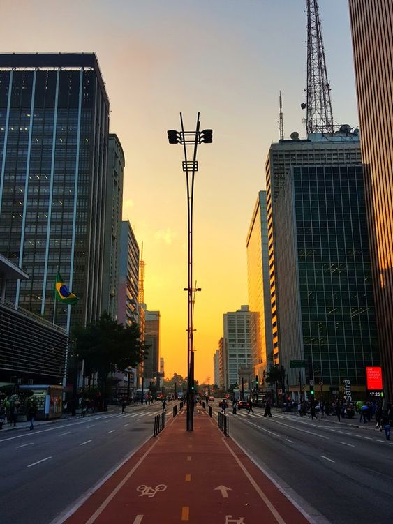
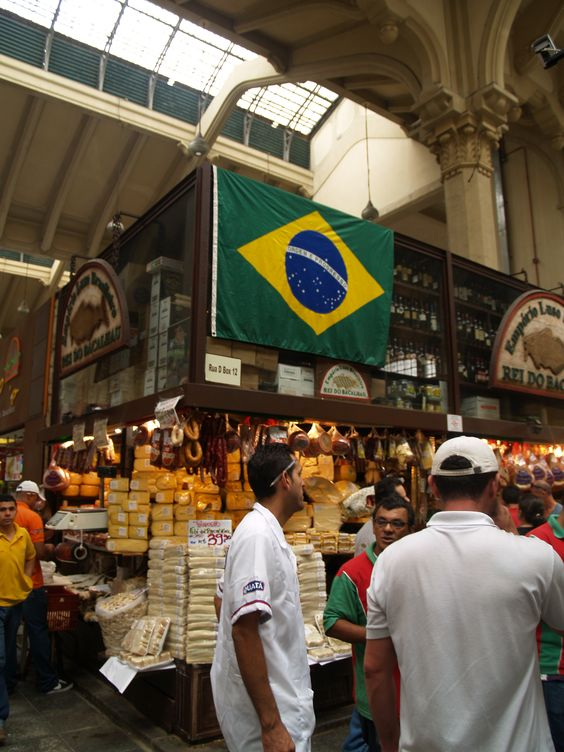
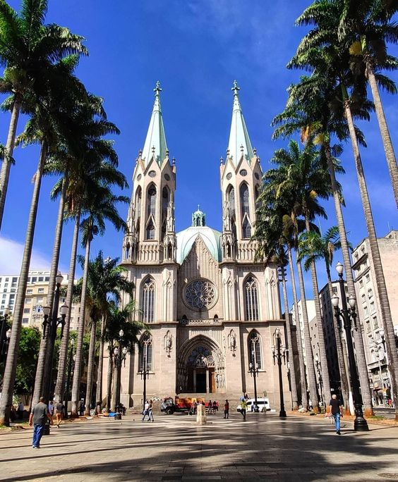
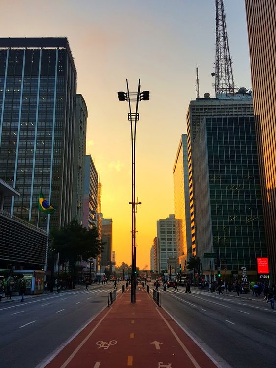
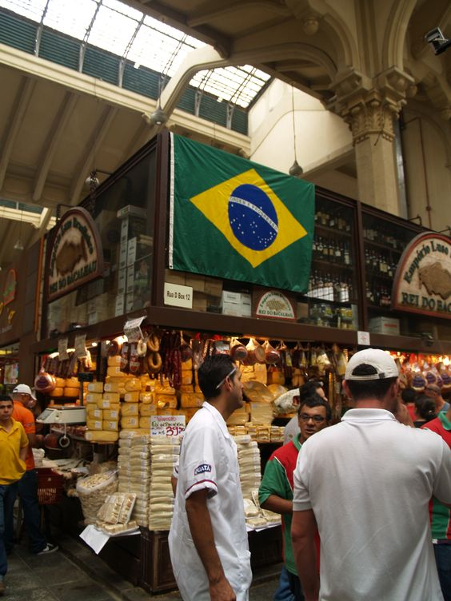
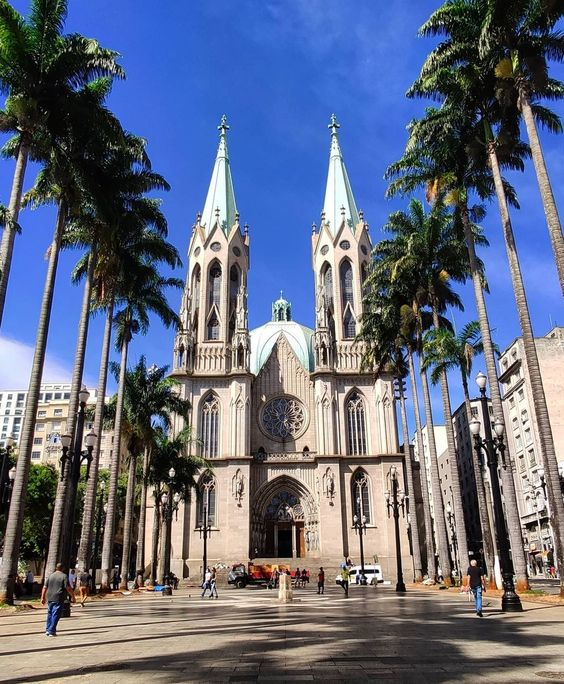

Sao Paulo
Slogan
 





São Paulo, Brazil’s vibrant financial center, is among the world's most populous cities, with numerous cultural institutions and a rich architectural tradition. Its iconic buildings range from its neo-Gothic cathedral and the 1929 Martinelli skyscraper to modernist architect Oscar Niemeyer’s curvy Edifício Copan. The colonial-style Pátio do Colégio church marks where Jesuit priests founded the city in 1554.